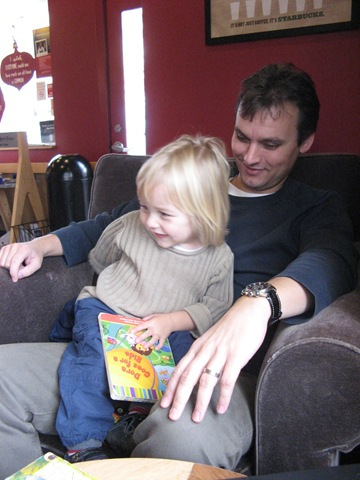
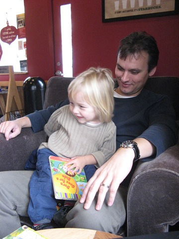
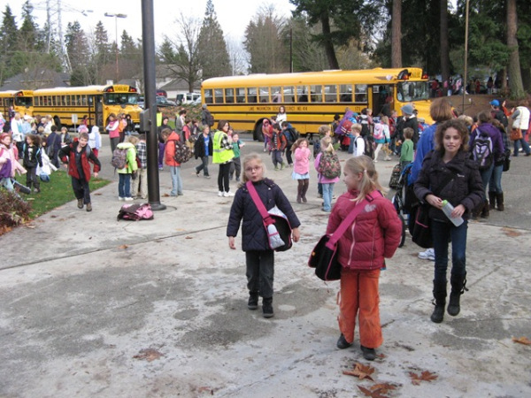
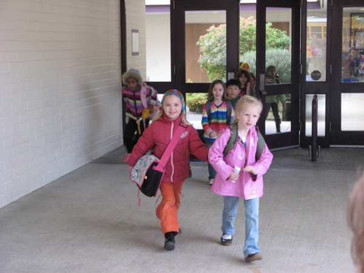
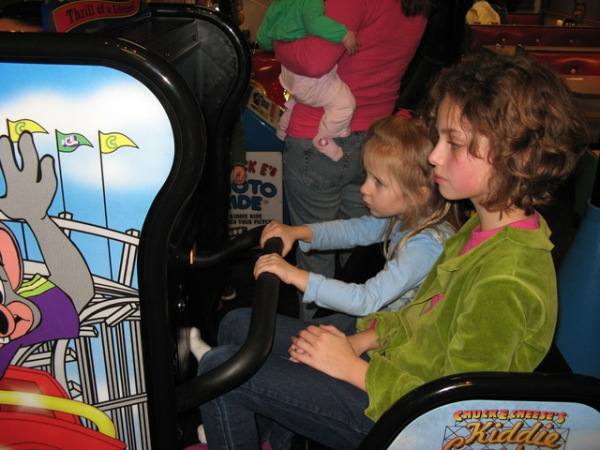
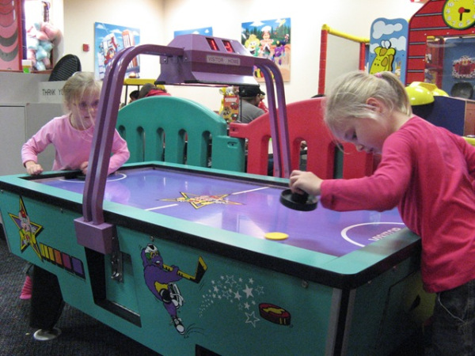
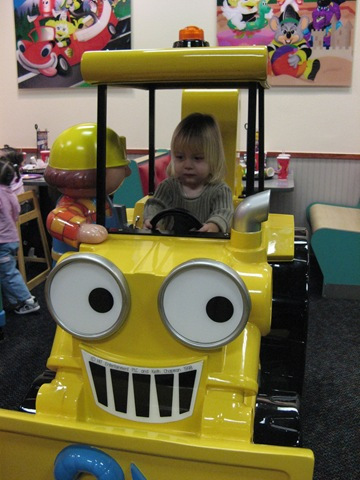
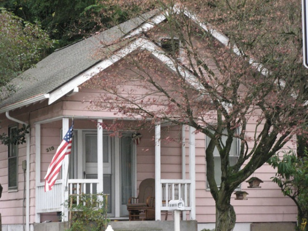

Eerste week school
Het is weer zaterdag en we zitten weer bij Starbucks. Ditmaal hebben we gezelschap van Siebe. Heel gezellig zo’n peutertje erbij! We passen op Siebe omdat Judith op de Nederlandse school helpt en Pepijn in Nederland is.
 

{kind=link}
Onze kinderen hebben hun eerste week op de Amerikaanse school achter de rug en sluiten de week af op de Nederlandse school (lekker even weer in de eigen taal kunnen praten). Ondanks een wat moeilijk begin voor Evy en vooral voor Merel beginnen ze toch al te wennen op school. Ik heb nog even mee gegymd en toen ik als een kangoeroe rond aan het springen was moest Merel zo lachen dat het ijs wel gebroken was.
Melle is erg gemotiveerd om Engels te leren zodat ze zo snel mogelijk haar nieuwe vriendinnen kan begrijpen. Knap hoe snel ze alles oppikt en haar plekje zoekt in de klas!. Ze hebben allemaal al nieuwe vriendinnen gemaakt. Ze krijgen meerdere keren per week bijles in Engels. Aanstaande donderdag is het Thanksgiving en begint het holiday season. 4 dagen vrij (Marcel ook)! Evy heeft al een heel mooi Thanksgiving boek gemaakt op school. Merel en haar nieuwe vriendinnetje hebben al tekeningen aan elkaar gegeven. Het is leuk om te zien hoe kinderen met handen en voeten elkaar toch begrijpen.
 {kind=link}
{kind=link}
Marcel is vrijdag geslaagd voor zijn Washington rijbewijs. We zijn druk bezig een auto te kopen want volgende week moet de huurauto terug. Ondertussen ook nog even meubels huren want onze spullen zitten nog op zee en 1 December trekken we in ons nieuwe huurhuis. We hebben vorige week de buurman al ontmoet toen we langs ‘ons’ huis reden. Zij hebben 4 kinderen in dezelfde leeftijd als onze kinderen. Kunnen ze gezellig spelen.
Het weer is nog steeds niet best. Als het niet hard regent, regent het zacht of gaat het weer regenen.
Zaterdagmiddag met Siebe, Sara en onze kinderen naar Chuck’n cheese geweest om te spelen. Dit hadden ze na een pittige week wel verdiend.
  {kind=link}
{kind=link}
{kind=link}
Mooie omgevingsfoto’s hebben we eigenlijk nog niet echt kunnen maken door het slechte weer. De bergentoppen zijn maar af en toe te zien door de lage wolken. Wel kwamen we dit leuke typisch Amerikaanse huisje tegen.
{kind=link}
Tot de volgende keer!